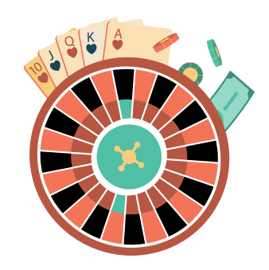

.png) Principal
Principal
Introducción al casino en línea
En los juegos de azar en línea modernos, hay miles de portales de juegos que ofrecen una gran cantidad de juegos, bonificaciones, botes, torneos y diversas promociones. A veces es difícil navegar por esta gran variedad, por ello esta guía constituye una introducción al casino en línea que incluye todo lo que necesitas saber para jugar gratis y con dinero. Jugar en casinos en línea puede ser divertido y, por supuesto, existe la posibilidad de ganar algo de dinero. Es muy simple y absolutamente seguro, pero a pesar de esto, la idea de jugar en línea con dinero real puede resultar abrumadora para algunas personas. En esta guía le explicamos el funcionamiento de los casinos online, los tipos de juegos, los tipos de bonos de los que puede beneficiarse, y también algunos consejos sobre cómo elegir los mejores casinos online dónde jugar.
.png)
Mejores Casinos Online
.png)
Casino Nuevos
.png)
Casino dinero real
.png)
Casino en vivo
.png)
Casino online gratis
.png)
Casinos que pagan rapido
Mejores casinos online de 2021
Hacer apuestas en casinos online y potencialmente obtener grandes ganancias nunca ha sido tan fácil. Uno de los problemas comunes que se enfrentan los jugadores sin experiencia en los casinos en línea está relacionado con decidir en cuál es seguro registrarse para crear una cuenta. Además, esto no es tan simple como puede parecer debido a la gran cantidad de casinos en línea que han surgido en los últimos años. Desde que los primeros casinos comenzaron a brindar servicios a través de Internet, esta forma de juego se ha vuelto cada vez más popular. En esta parte de nuestra guía enumeramos los mejores casinos online de 2021 para jugar. Al registrarse en uno de estos sitios puede estar seguro de que disfrutará de una amplia gama de juegos junto con una excelente combinación de paquete de bienvenida completamente segura.


¿Cómo empezar a jugar en los casinos en línea?
Para evitar situaciones desagradables al empezar a jugar en los casinos en línea, primero, estudie las reglas establecidas en el casino de su elección.
Elige un casino
Es importante escoger sitios que sean altamente regulados y confiables. Hay varias características que hacen que un casino en línea sea confiable, seguro y justo: licencia, proveedor de software y transparencia.
Crea una cuenta
La mayoría de los casinos en línea ofrecen un procedimiento de registro de cuenta muy simple e intuitivo, ya que solo necesita ingresar sus datos personales y sus datos bancarios. Luego, debe confirmar la información de contacto especificada.
Haz un depósito
Todos los operadores de juegos de azar principales de la industria ofrecen una amplia gama de opciones para los jugadores, que van desde tarjetas de crédito o débito hasta billeteras electrónicas y banca en línea. Depositar en casinos en línea y sitios de apuestas es rápido y fácil. Todos los casinos en línea de nuestro ranking aceptan una gran variedad de métodos de depósito y retiro.
Reclama tu bono de bienvenida
Una forma en que la te dan la bienvenida como jugador nuevo es con los bonos de bienvenida. Muchos sitios ofrecen paquetes de bienvenida atractivos que incluyen un bono igual al monto del depósito. Aproveche tantas oportunidades de bonificación de bienvenida como pueda. Este dinero gratis se agrega al saldo de la cuenta.
Elige tu juego favorito
Para empezar a jugar, simplemente tiene que seleccionar un juego, pero tenga cuidado, será una decisión difícil de tomar, ya que los casinos en línea ofrecen cientos y cientos de títulos en todas las categorías inimaginables. La variedad de tragamonedas, juegos de cartas y juegos de mesa de los casinos online es increíble, mucho más que las opciones disponibles en los lugares físicos.
Juega y gana
Finalmente, juega y gana. Los casinos en línea pueden llegar a pedirte tus documentos de verificación para procesar tu primer retiro. Es un procedimiento normal, cuyo objetivo es prevenir el fraude y garantizar la seguridad tanto de los jugadores como del casino.
Los consejos para escoger donde jugar
Los lugares de juego han existido durante siglos, pero el progreso tecnológico reciente ha hecho que todo sea aún más fácil para los entusiastas de apuestas de los casinos online, ya que cada vez más jugadores apuestan con dinero real en Internet. Es de fundamental importancia elegir dónde jugar y hacerlo en el mejor casino en línea. Por ello, al escoger donde jugar se debe prestar atención a ciertos criterios de selección a fin de asegurar que el casino sea confiable y seguro.
Bonos y promociones del casino
Cuando se trata de seleccionar los mejores casinos en línea, es importante asegurarse de obtener los mejores bonos de casino. Algunos bonos requieren depósitos, otros no. Algunos bonos de casino se dividen en varios depósitos y otros bonos son exclusivos para jugadores VIP y no pueden ser utilizados por jugadores estándar.
.png)
Fiabilidad del casino
Es importante entender cuál casino en línea es, de alguna manera, más justo. Por ello, es necesario verificar la confiabilidad del sitio. Elija un casino que sea famoso por procesar los pagos rápidamente.
.png)
Métodos de pago
Por lo general, los casinos en línea brindan una amplia variedad de instrumentos financieros, entre los que se incluyen tarjetas de crédito como Maestro, Visa, Visa Electron, MasterCard, billeteras virtuales como Neteller, PayPal, Skrill, Paysafecard y las transferencias bancarias. Los casinos online seguros cuentan con varios métodos de pago, cada uno con sus ventajas e inconvenientes, por lo que es importante que conozca sus opciones para identificar la que más le convenga.
.png)
Selección de los juegos
Al elegir un juego, debe tener en cuenta que tengan la licencia de un desarrollador de confianza. Es incluso mejor si además están certificados por auditores independientes. Esta es la única forma en que puede estar seguro de que los resultados de todas las rondas están determinados por un generador de números aleatorios.
.png)
La experiencia de juego
Para jugar en los casinos por dinero y disfrutarlo, no es necesario recibir ningún entrenamiento especial. Por supuesto, la calidad de juego aumenta con la experiencia, cuando el jugador comienza a comprender los diversos matices. Sin embargo, el deseo habitual es suficiente para empezar a jugar.
.png)
Apps de casino y uso para celular
Gracias al avance tecnológico de los dispositivos móviles, los operadores pueden ofrecer cada vez más juegos en las aplicaciones. Todas las aplicaciones de casinos móviles online son excelentes, pero no se puede negar que los dispositivos iOS y Android están a la cabeza. Dado que estos dispositivos dominan el mercado global en términos de uso, los desarrolladores y operadores de software han dedicado naturalmente más tiempo en ellos.
.png)
Casino en vivo
La tecnología moderna de iGaming ha hecho posible que los jugadores en línea jueguen juegos de azar auténticos, con crupieres en vivo en una variedad de plataformas. Actualmente, los líderes del mercado que suministran transmisiones de casino en vivo online son Playtech, Evolution Gaming, CWC Gaming y Vuetec.
.png)
Servicio al cliente
Si algo sale mal en algún momento, o si solo tiene algunas preguntas que hacer, la atención al cliente debe ser insuperable. Por tanto, el servicio al cliente debe ser rápido, profesional y útil. Además, debe disponer de varias formas para ponerse en contacto con el equipo de soporte.
.png)
Licencia
Siempre recomendamos verificar la legalidad de las actividades del casino. Debido a las diferentes leyes que se han promulgado en diferentes partes del mundo, también importa si la licencia del casino se aplica al país en el que juegas. Para operar correctamente en diferentes países del mundo, los operadores suelen solicitar licencias en diferentes jurisdicciones como Malta Gaming Authority (MGA), Reino Unido, Gibraltar, Agencia de Aduanas y Monopolios (ADM), Curazao, etc.
¿Cómo funcionan los casinos online?
Los casinos online utilizan un software que permite jugar en línea una variedad de juegos. Para jugar en estos sitios web solo se requiere una PC o algún dispositivo móvil con acceso a Internet y registrar una cuenta. Todos los juegos de los casinos en línea funcionan según el mismo principio básico. Hay algún tipo de representación gráfica de cómo se vería el juego en un casino real, una opción para ajustar las apuestas, opciones para los diferentes tipos de apuesta permitidas, y una opción para iniciar una nueva ronda de juego. La cantidad apostada se deduce de su cuenta y si se sale una combinación ganadora, el pago correspondiente se añade instantáneamente a la cuenta.
La regulación de los juegos de azar
Si bien no existe una sola organización que regule la industria en todo el mundo, hay varias partes del mundo donde la operación de sitios de juegos de azar es completamente legal y está regulada. Esas regiones se conocen comúnmente como jurisdicciones de juegos de azar en línea y la mayoría de las empresas de esta industria tienen su sede en esas ubicaciones. A continuación, algunas de esas jurisdicciones:
La Comisión de Juego del Reino Unido (UKGC)
Este regulador es responsable de regular los juegos de azar en Gran Bretaña y de supervisar la ley del juego. Por lo tanto, se ocupa de las salas de juegos, las apuestas, el bingo, los casinos, las máquinas tragamonedas, las loterías y todos los juegos remotos; sin embargo, las apuestas generalizadas están fuera de su jurisdicción.
Agencia de Aduanas y Monopolios (ADM)
La ADM (antes AAMS) controla el mercado de los juegos de azar en Italia. Las licencias ADM permiten a los operadores realizar actividades de juego legales en el mercado nacional italiano, pero prohíben operar fuera del país.
Malta Gaming Authority (MGA)
La MGA regula varios sectores de la industria del juego. Los jugadores que eligen unirse a un casino en línea con licencia MGA están a salvo de cualquier tipo de estafa. La MGA, de hecho, siempre ha luchado por el juego legal y seguro y tiene una idea bien definida del juego responsable.
Curazao
Los operadores han aceptado oficialmente las apuestas en línea en Curazao desde 1993, y el organismo regulador, la Asociación de Apuestas en Internet de Curazao, se estableció solo en 2002.
Gibraltar
Esta es una asociación comercial que representa todas las actividades relacionadas con el juego en Gibraltar.
Jugar a un casino online vs. casino físico
Para jugar en un casino físico se requiere asistir al lugar donde funciona el establecimiento, mientras que en un casino online los juegos están disponibles en Internet, es decir, solo se requiere una conexión a Internet y una PC o dispositivo móvil para disfrutar de los juegos de casino. En los casinos online puedes jugar en máquinas tragamonedas, a la ruleta y demás juegos desde cualquier parte del mundo. Los casinos en línea pagan a sus usuarios por la actividad de juego. Se pueden recibir bonificaciones por registro, depósito, participar en loterías y sorteos. En un casino online los jugadores tienen una mayor gama de juegos para elegir. Esto podría deberse, en parte, a que no es necesario alquilar un gran espacio para albergar todas las máquinas de juego. Finalmente, al jugar en un casino en línea no tendrás gastos adicionales, a excepción de las apuestas.
Tipos de casino
Los juegos en los casinos online se han vuelto más diversos y están disponibles en cualquier momento y lugar. Además, de acuerdo con el método de presentación y las características distintivas de la interfaz, los casinos en sí se dividieron en varios tipos.
Aquellos que quieran poner a prueba sus habilidades y conocimientos en un juego contra un crupier en vivo puede hacerlo desde la comodidad de su hogar. La mayoría de los operadores de juegos de azar más conocidos tienen secciones de casino en vivo en sus sitios. Hay varios pilares tradicionales como el baccarat, el póker, la ruleta y el blackjack, todos dirigidos por crupieres amables y atractivos y en tiempo real. Los juegos se transmiten en alta definición desde lugares puestos a disposición por los desarrolladores de software.
La mejora de las capacidades de los dispositivos móviles ha hecho posible disponer de casinos virtuales en nuestros celulares. Por lo que es posible jugar a través de la aplicación móvil de su casino en línea favorito o directamente a través de Internet en cualquier navegador.
Tipos de casino
Los juegos en los casinos online se han vuelto más diversos y están disponibles en cualquier momento y lugar. Además, de acuerdo con el método de presentación y las características distintivas de la interfaz, los casinos en sí se dividieron en varios tipos.
Aquellos que quieran poner a prueba sus habilidades y conocimientos en un juego contra un crupier en vivo puede hacerlo desde la comodidad de su hogar. La mayoría de los operadores de juegos de azar más conocidos tienen secciones de casino en vivo en sus sitios. Hay varios pilares tradicionales como el baccarat, el póker, la ruleta y el blackjack, todos dirigidos por crupieres amables y atractivos y en tiempo real. Los juegos se transmiten en alta definición desde lugares puestos a disposición por los desarrolladores de software.
La mejora de las capacidades de los dispositivos móviles ha hecho posible disponer de casinos virtuales en nuestros celulares. Por lo que es posible jugar a través de la aplicación móvil de su casino en línea favorito o directamente a través de Internet en cualquier navegador.
Disfruta casinos online gratis
En los casinos en línea, las apuestas de juegos gratuitas son tan habituales como las apuestas online con dinero real. Con los juegos gratis los jugadores tienen la oportunidad de probar los juegos del casino antes de hacer la transición a jugar con dinero real. 
¿Cómo funcionan los juegos gratis?
Los juegos gratis ofrecidos por los casinos en línea son una forma en que estos casinos exhiben sus juegos sin que los clientes potenciales piensen que están atrapados en el registro de una cuenta. Es muy probable que los jugadores que hayan probado juegos de casino en línea en modo gratuito y estén satisfechos con la experiencia realicen depósitos.
Las ventajas de los juegos gratis
- No hay riesgo de volverse adicto al juego;
- Aprender las reglas y los matices de cada juego de casino en línea es gratis;
- Es posible probar estrategias y sistemas de apuestas sin arriesgar los fondos.
Juega en casinos online con dinero real
Casi todos los casinos en línea brindan a los visitantes la oportunidad de jugar gratis y con dinero. La opción de jugar en un casino online con dinero real da una sensación completamente diferente, incluso a tasas mínimas.
.png)
Características de los casinos
Algunos casinos en línea han descifrado el código para permanecer en la cima, y entre las características más importantes se incluyen:
- interfaz más intuitiva;
- capacidad de jugar en versiones de escritorio;
- política de bonificación para todos los invitados;
- disponibilidad de diferentes métodos para depositar y retirar fondos.
¿Por qué jugar con dinero real?
Jugar juegos con dinero real brinda la oportunidad de ganar dinero gracias a los casinos online. Una vez que te hayas familiarizado con un juego y quieras tener la oportunidad de ganar dinero real, será el momento de jugar a los juegos en los casinos online que sí pagan.
Proveedores de software para los sitios de juegos de azar
Muchos casinos en línea ofrecen juegos con gráficos sofisticados, animaciones emocionantes y efectos de sonido realmente impresionantes y muy realistas gracias a los proveedores y gestores de software. Estas son grandes empresas especializadas en el desarrollo de plataformas informáticas y software de juegos.
Los más relevantes
Los principales proveedores de software ofrecen sus productos a varios casinos. Por eso, en algunos casos, es posible encontrar el mismo tipo de juegos en diferentes casinos online. A continuación, los principales proveedores de software que operan actualmente en el sector de los juegos de azar en línea son los siguientes:
NetEnt
NetEntertainment es una de las empresas líderes entre los proveedores de juegos de casino. Es famosa por sus innovaciones, juegos de casino en vivo y una gran selección de máquinas tragamonedas.
Novomatic
En particular, este proveedor es líder en el desarrollo de máquinas tragamonedas y videoloterías. Se destaca por la máxima protección de los jugadores y por un fuerte compromiso en la educación de los usuarios sobre el "juego responsable".
IGT
International Game Technology (IGT) es uno de los principales proveedores de máquinas tragamonedas para casinos en línea y físicos. Entre los productos más reconocidos de la empresa se encuentran: "Cleopatra", "Wolf Run", "Star Trek", "White Orchid" y "Pharaoh's Fortune".
Microgaming
Ofrece el software de póker, jackpot y bingo en línea más popular, aún más atractivo y realista gracias al crupier en vivo. Microgaming es, hasta la fecha, uno de los proveedores de software más populares del mundo.
Playtech
Fue la primera empresa en introducir algunas características muy importantes como el historial de transacciones, las clasificaciones VIP y el fortalecimiento de las medidas de seguridad. Además de esto, fue el primero en introducir la “cuenta unificada”, un sistema revolucionario que permite a los jugadores usar la misma cuenta para jugar al póker en diferentes casinos en línea. También es el productor de software de tragamonedas inspirado en los protagonistas de los cómics de Marvel, como "X-Men", "El Increíble Hulk", "Los Cuatro Fantásticos", "Iron Man", "Los Vengadores" y muchos otros.
Los juegos de casino online más populares
Los jugadores de casino visitan y se unen a sitios web de casinos en línea por una sola razón: jugar, lo que significa que, si los casinos no tienen una cantidad considerable de juegos, corren el riesgo de perder jugadores frente a sus rivales. Por ello, la mayoría de los casinos en línea ofrecen una variedad de juegos diferentes: desde tragamonedas hasta juegos de mesa clásicos.
Blackjack
El blackjack es uno de los favoritos de muchos jugadores, ya que las reglas son lo suficientemente simples de entender. El objetivo es conseguir una mano lo más cerca posible de 21, sin pasarse.
.png)
Ruleta
La ruleta de los casinos online es el juego preferido de millones de jugadores en línea. Esta inmensa popularidad se puede atribuir a la simplicidad del juego, sin embargo, la impresionante cantidad de opciones de apuestas online contribuye aún más a su gran atractivo. La mayoría de los fanáticos de la ruleta online prefieren la variante francesa y europea debido a la presencia de solo un cero, lo que reduce la ventaja de la casa al 1.36% y 2.70%, respectivamente. La variante estadounidense tiene una mayor volatilidad debido a la presencia de un doble cero adicional que eleva la ventaja de la casa al 5,26%.
.png)
Tragamonedas
Las tragamonedas constituyen un porcentaje significativo de la colección de juegos en todos los casinos en línea. Son muy fáciles de jugar y pueden proporcionar entretenimiento durante mucho tiempo. Los casinos en línea ahora ofrecen opciones de tragamonedas de cinco y siete carretes que tienen múltiples líneas de pago.
.png)
Dados
Este emocionante juego de azar tiene sus propias ventajas. La cantidad de apuestas online que se pueden realizar en los dados es realmente impresionante y el objetivo de todos los jugadores es predecir el resultado de una tirada o una serie de tiradas de dos dados.
.png)
Bingo
El bingo es un juego de estilo de lotería que pertenece a la categoría de juegos de casino más populares que se juegan en línea. ¿Quién nunca ha probado suerte en este popular juego con la esperanza de poder gritar a todo pulmón "¡BINGO!"? Un casino en línea de buena reputación generalmente tiene una sala de bingo separada donde los jugadores pueden participar en diferentes tipos de torneos.
.png)
Póker
El póker está disponible en una cantidad impresionante de casinos en línea donde es posible jugar contra el sistema RNG. Algunas de las variantes más comunes en las que puede jugar contra un crupier virtual son Casino Hold'em, Caribbean Stud, Oasis Póker y Texas Hold'em.
.png)
Otros juegos
Uno de los mayores atractivos de visitar un casino en línea es la increíble variedad de juegos disponibles. Los mejores casinos online también ofrecen otros juegos populares como el baccarat, videopóker, arcade y tarjetas de rascar.
Apuestas deportivas en los casinos en línea
Los sitios de juegos de azar promueven las apuestas deportivas en línea. Los sitios de apuestas deportivas utilizan un software que le permite buscar y realizar las apuestas que desee.
Cuáles son y cómo funcionan
.png) Las apuestas deportivas son quizás la forma más simple de juegos de azar en línea. No es necesario descargar ningún software y es muy sencillo comprobar los mercados de apuestas disponibles para hacer las apuestas de su casino online de su elección.Un sitio típico de apuestas deportivas tendrá una sección que enumera todos los diferentes deportes cubiertos. Al hacer clic en el deporte en el que desea apostar se abrirá una nueva página que muestra los próximos eventos de ese deporte. Después de completar la selección requerida, debe ingresar el boleto de apuestas y el monto de la apuesta se deducirá de la cuenta del apostador al confirmar la apuesta.Finalmente, si la apuesta es favorable será devuelta a la cuenta del usuario junto con las ganancias. Si la apuesta no resulta ganadora se pierde y no ocurre nada más.
Las apuestas deportivas son quizás la forma más simple de juegos de azar en línea. No es necesario descargar ningún software y es muy sencillo comprobar los mercados de apuestas disponibles para hacer las apuestas de su casino online de su elección.Un sitio típico de apuestas deportivas tendrá una sección que enumera todos los diferentes deportes cubiertos. Al hacer clic en el deporte en el que desea apostar se abrirá una nueva página que muestra los próximos eventos de ese deporte. Después de completar la selección requerida, debe ingresar el boleto de apuestas y el monto de la apuesta se deducirá de la cuenta del apostador al confirmar la apuesta.Finalmente, si la apuesta es favorable será devuelta a la cuenta del usuario junto con las ganancias. Si la apuesta no resulta ganadora se pierde y no ocurre nada más.
Las promociones y bonos de casino
Casi todos los casinos en línea ofrecen bonificaciones generosas. Puede cobrar estos bonos
registrando una cuenta gratuita o haciendo un primer depósito en el casino.
Bono de bienvenida
El llamado bono de bienvenida de un casino online, o bono de registro, es sin duda una de las opciones más populares que la mayoría de los casinos ofrecen para sus jugadores recién registrados. Los jugadores pueden optar por hacer uso de un paquete de bienvenida que consiste principalmente en una bonificación de igualación y algunos giros adicionales.
.png)
Bono sin depósito
El bono sin depósito es uno de los bonos más populares que existen. Recibirá este bono simplemente registrando una cuenta de casino gratuita. Para los bonos sin depósito no se requiere que se depositen fondos, lo que los hace ideales para jugar en un casino. Sin embargo, no olvide que las promociones sin depósito también están relacionadas con las condiciones de apuesta.
Giros gratis
Varios casinos en línea ofrecen giros gratis que suelen estar disponibles para un determinado juego de casino online como los tragamonedas. Para obtener estos giros gratis, el jugador debe crear una cuenta en el casino en línea que los ofrece y los giros deben usarse dentro de un cierto tiempo (generalmente 7 días) antes de que caduquen.
¿Cómo puedo retirar mi bono?
Lo principal en la etapa de retirar los bonos es cumplir estrictamente con todas las reglas estipuladas en el acuerdo de usuario del casino online.
Términos y regulaciones
.png) Algunos casinos excluyen ciertos métodos de pago de sus bonos. Cualquier depósito en un casino online realizado con un método de pago excluido no será elegible para las ofertas. Los pagos con tarjeta de débito y las transferencias bancarias pueden ser incluso la única opción para acceder a los bonos. Algunos bonos solo están disponibles para un determinado juego o categoría. Debes asegurarte de que solo juegas a los juegos que están permitidos; no seguir esta condición puede resultar en la pérdida de tus ganancias por romper los términos del casino online. Si tiene la intención de retirar sus ganancias antes de completar los requisitos de apuesta, el casino puede exigirle que siga jugando hasta que finalice la apuesta. Hay casos en los que los casinos online solo ofrecen giros gratis al registrarse con tarjeta. Por otro lado, a menudo, los casinos indican en las reglas que un jugador puede retirar dinero solo si su rotación de apuestas excede la cantidad de depósitos en un cierto número de veces.
Algunos casinos excluyen ciertos métodos de pago de sus bonos. Cualquier depósito en un casino online realizado con un método de pago excluido no será elegible para las ofertas. Los pagos con tarjeta de débito y las transferencias bancarias pueden ser incluso la única opción para acceder a los bonos. Algunos bonos solo están disponibles para un determinado juego o categoría. Debes asegurarte de que solo juegas a los juegos que están permitidos; no seguir esta condición puede resultar en la pérdida de tus ganancias por romper los términos del casino online. Si tiene la intención de retirar sus ganancias antes de completar los requisitos de apuesta, el casino puede exigirle que siga jugando hasta que finalice la apuesta. Hay casos en los que los casinos online solo ofrecen giros gratis al registrarse con tarjeta. Por otro lado, a menudo, los casinos indican en las reglas que un jugador puede retirar dinero solo si su rotación de apuestas excede la cantidad de depósitos en un cierto número de veces.
Límites de tiempo en el uso del bono
La mayoría de los sitios establecen límites de tiempo para utilizar un bono después de haberlo activado. Tendrá que cumplir las condiciones establecidas para ello, como los requisitos de apuesta, dentro de ese tiempo para poder acceder a sus fondos. Si no lo hace, sus fondos de bonificación pueden perderse y no podrá retirar ninguna ganancia potencial.
Métodos de pago en casinos online
Los métodos de pago en los casinos online deben ser muy fáciles de usar y permitir realizar transacciones rápidas en ambas direcciones.
Los métodos más populares
A continuación, los métodos más populares y comunes utilizados en varios casinos en línea:

Son el método de pago más común del mundo. Cualquier cuenta bancaria tiene una o más tarjetas asociadas y es a través de estas mismas tarjetas que puedes realizar diferentes operaciones, incluidos depósitos y retiros en el casino online.
PayPal es probablemente el monedero electrónico más conocido hoy en día. Está considerado como uno de los métodos de pago más seguros porque no necesita compartir la información de su tarjeta con ningún casino.
Neteller se ha convertido en uno de los métodos de pago en línea más reconocidos y seguros en la actualidad, con un servicio en el que confían millones de personas de todo el mundo y que se utiliza en más de 180 países.
Skrill es uno de los monederos electrónicos más antiguos de la actualidad, ya que se fundó en 2001. Por aquel entonces se llamaba Moneybookers y se ha convertido en uno de los monederos electrónicos más respetados del mundo.
Para hacer un depósito con este método, todo lo que tiene que hacer es buscar en el sitio web de Paysafecard el punto de venta más cercano a su ubicación, comprar un vale y utilizar el PIN proporcionado en el vale para depositar todo o parte del vale en su cuenta.
Las transferencias bancarias son uno de los métodos de pago más seguros para los jugadores de casinos online. Permiten a los jugadores depositar y retirar sus fondos directamente en la cuenta bancaria de su casino sin necesidad de recurrir a un tercero.
Al igual que los monederos electrónicos, pagar con bitcóin garantiza el anonimato de los jugadores. No hay necesidad de compartir información confidencial o sus datos personales, por lo que no hay riesgo de que esta información se filtre.
Velocidad, límites y tarifas
Cada método tiene ventajas y desventajas, velocidad de procesamiento y límites de uso, por lo que debe elegir el método que mejor se adapte a sus necesidades.
Velocidad:
La mayoría de los métodos bancarios ofrecen depósitos instantáneos. Algunas opciones de depósito incluyen capas de seguridad adicionales que pueden ralentizar un poco las cosas, como el pago seguro de Visa, pero es un pequeño precio a pagar por una mayor tranquilidad. Muchos casinos online ofrecen retiradas rápidas mediante el uso de monederos electrónicos, que van desde transferencias instantáneas hasta esperas de solo 24 horas. Las tarjetas de débito suelen ser mucho más lentas, con plazos de 3 a 5 días. Algunos métodos de pago están excluidos de las bonificaciones, así que compruebe que su opción preferida para la velocidad también es elegible para reclamar bonificaciones de depósito.
Límites y tarifas:
Un aspecto importante del juego en los casinos son los límites establecidos por el operador. Los casinos tienen diferentes límites de depósito y retirada que pueden afectar la forma de jugar con ellos. Consulte las reglas para obtener información sobre cuánto se permite retirar al mismo tiempo, durante el día, la semana y el mes. También tenga en cuenta los mínimos aplicables, que pueden ser diferentes para los sistemas de pago individuales. Además, al utilizar algunos sistemas de pago puede tener costos adicionales en forma de comisiones.
Casino para celular - Cómo jugar desde el celular
Los jugadores pueden disfrutar de los juegos de casino para celular de dos maneras, ya sea en una aplicación de casino descargable o a través del sitio web del casino. La mayoría de los dispositivos móviles permiten utilizar cualquiera de las dos opciones.
.png)
Sin descargas
No todos los casinos en línea ofrecen una aplicación móvil descargable. Entonces, en el caso de que el casino en el que te encanta jugar no tenga una aplicación móvil, puedes usar el sitio web del casino. O si no desea cargar el espacio de almacenamiento de su dispositivo móvil con más aplicaciones, el sitio web del casino sería su opción.
Con aplicación para descargarse
Algunos casinos ofrecen una aplicación móvil descargable que permite a los usuarios de dispositivos móviles jugar una amplia selección de juegos de casino online desde su dispositivo móvil. Una de las ventajas importantes de utilizar la aplicación descargable del casino es que el casino funcionaría mucho más rápido en su dispositivo. Prácticamente todos los casinos en línea tienen un sitio web compatible con dispositivos móviles, pero los mejores casinos móviles tienen aplicaciones para dispositivos iOS y Android.
¿Cómo ganar dinero en casinos online?
Los casinos online no solo son una manera maravillosa de pasar tiempo libre de manera útil, sino también una buena oportunidad para convertirse en el dueño de una buena suma. Para ganar dinero en casinos online que sí pagan puede seguir estos consejos y trucos:
Antes de comenzar el juego por dinero, practique en el modo de prueba y estudie todas las sutilezas del juego.
Debe aprovechar tantas bonificaciones como sea posible. Aunque es recomendable investigar las ofertas más rentables, ya que los bonos normalmente requieren que se cubra una cierta cantidad antes de que se pueda enviar una solicitud de retiro para las ganancias asociadas con el bono.
Siempre establezca un presupuesto de juego: determine la cantidad de pérdida máxima y siempre finalice el juego cuando se alcance.
También vale la pena verificar el RTP, ya que permite hacerse una idea general de las ganancias de dinero real que podría generar a largo plazo.
Si ganó varias veces seguidas, finalice el juego y salga. No siempre puedes ganar. Existe una probabilidad muy alta de perderlo todo en la próxima ronda.
Nuevos casinos online de 2021
Aunque es posible que tenga un casino realmente favorito y probado, nunca está de más investigar nuevos casinos online, ¡tal vez encuentre su casino en línea favorito de 2021!
¿Qué son y cómo encontrarlos?
.png) Los nuevos casinos online son aquellos que llevan en el mercado menos de 12 meses y se pueden encontrar en la categoría 2021. Estos sitios ofrecen ofertas emocionantes, temas maravillosos e incluso pueden tener algunos juegos de casino online únicos. Algunos son lanzados por marcas que tienen varias marcas de juegos de azar diferentes, y aunque son administrados por personas con experiencia en el área, siempre se consideran como recién llegados a la escena de los juegos de casino online.
Los nuevos casinos online son aquellos que llevan en el mercado menos de 12 meses y se pueden encontrar en la categoría 2021. Estos sitios ofrecen ofertas emocionantes, temas maravillosos e incluso pueden tener algunos juegos de casino online únicos. Algunos son lanzados por marcas que tienen varias marcas de juegos de azar diferentes, y aunque son administrados por personas con experiencia en el área, siempre se consideran como recién llegados a la escena de los juegos de casino online.
¿Cómo sé si los casinos online son seguros?
El factor clave que influye en las actividades de los operadores es la confianza de los jugadores. Los clientes deben sentirse seguros de que alguien tiene el control del proceso y de que no se trata de un engaño.Por eso los establecimientos deben estar regulados por entes autorizados y emplear medidas que garanticen la privacidad y seguridad de los datos personales y financieros de sus clientes.
Licencia y privacidad
.png) Lo primero que debe saber sobre la seguridad de los casinos es la importancia de jugar solo en sitios con licencia. La mayoría de las agencias gubernamentales asumen la responsabilidad de supervisar y otorgar licencias tanto a los operadores como a los juegos proporcionados. Las empresas deben tener la licencia adecuada para poder operar legalmente y deben adherirse a ciertas reglas y regulaciones para mantener sus licencias. Los operadores de casinos con licencia legal son capaces de garantizar una transparencia absoluta sobre el software utilizado, los métodos de pago y la dinámica del juego. Además, los casinos en línea seguros utilizan tecnología de encriptación digital de capa de conexión segura (SSL) de 128 bits para encriptar y proteger todas las transacciones de dinero en línea. Esto permite que los datos se codifiquen de modo que durante el intercambio no puedan ser leídos por aquellos a quienes no están destinados.
Lo primero que debe saber sobre la seguridad de los casinos es la importancia de jugar solo en sitios con licencia. La mayoría de las agencias gubernamentales asumen la responsabilidad de supervisar y otorgar licencias tanto a los operadores como a los juegos proporcionados. Las empresas deben tener la licencia adecuada para poder operar legalmente y deben adherirse a ciertas reglas y regulaciones para mantener sus licencias. Los operadores de casinos con licencia legal son capaces de garantizar una transparencia absoluta sobre el software utilizado, los métodos de pago y la dinámica del juego. Además, los casinos en línea seguros utilizan tecnología de encriptación digital de capa de conexión segura (SSL) de 128 bits para encriptar y proteger todas las transacciones de dinero en línea. Esto permite que los datos se codifiquen de modo que durante el intercambio no puedan ser leídos por aquellos a quienes no están destinados.
Servicio al cliente
Una de las formas más rápidas por las que un casino puede perder su lugar como uno de los mejores casinos en línea es siendo inalcanzable. Los clientes quieren poder contactar al equipo de soporte instantáneamente cuando tienen un problema.
Canales de comunicación:
La mayoría de los mejores casinos en línea tienen varios canales de comunicación. Están abiertos las 24 horas del día, los siete días de la semana para atender quejas. Tienen una opción de chat en vivo y múltiples opciones de idioma para jugadores de todo el mundo. También proporcionan una dirección de correo electrónico, un número de teléfono o incluso una dirección de oficina que se puede localizar fácilmente.
.png)
¿Cómo evitar el fraude en casino cuando juegas con dinero real?
Cada vez aparecen más casinos en la red. La alta rentabilidad de esta área también atrae a muchos estafadores que buscan sacar provecho de los usuarios comunes. Pero, hay varias señales básicas de engaño que indican que es peligroso jugar en un casino online por dinero real. A continuación, te indicamos algunos consejos para evitar ser estafado:
.png)
Verificar la licencia y el regulador
Lo primero que debes revisar en un casino online para evitar ser víctima de cualquier tipo de fraude es la licencia y la autoridad que la emitió. Hay varias jurisdicciones donde se emiten permisos para operar casinos en línea. Es bueno que el sitio web tenga documentos que confirmen la licencia, pero es mejor verificar su autenticidad.
.png)
Buscar proveedores de software certificados
Un casino online seguro no solo debe tener una licencia válida para operar, sino también una selección de juegos de un proveedor certificado que funcione sobre la base de un generador de números aleatorios.
Descubrir métodos de pago reconocidos
Un casino en línea que funcione con los métodos de depósito más reconocidos a nivel nacional e internacional debe ser un casino seguro para apostar su dinero y realizar sus depósitos y retiros. Los casinos en línea legítimos y con licencia aceptan transacciones de depósito y retiro en línea de emisores de tarjetas de crédito de todo el mundo, billeteras electrónicas, sistemas de cupones en línea o incluso métodos de pago populares a nivel local.
Consultar bonificaciones y promociones
Algunos casinos en línea prometen bonificaciones extremadamente grandes y atractivas y ofertas especiales que "llamarán la atención" de cualquier jugador. Pero la prudencia es la mejor amiga del jugador de casino en línea y, como dice la gente, sabiamente, "cuando la oferta es grande, ¡sospecha!"
.png)
Buscar reputación online
Por más entusiasta y ansioso que esté por comenzar a jugar en un casino en línea, nunca se deje llevar por el aspecto del sitio, sus gráficos o los juegos disponibles. Dedique algún tiempo a verificar la reputación y calificación del casino de acuerdo con las reseñas de jugadores reales.Existen varios sitios en Internet que se dedican exclusivamente a analizar casinos online seguros y foros de jugadores donde intercambian opiniones sobre los más variados temas relacionados con los casinos online, incluida la credibilidad y seguridad de los sitios.
.png)
Existencia de términos y condiciones
Cualquier casino online seguro y serio hace hincapié en que los términos y condiciones de sus juegos y servicios sean muy explícitos. Busque los Términos y condiciones del casino en línea antes de crear una cuenta y hacer depósitos, pero no se limite a ver si el casino tiene términos y condiciones. Lea detenidamente el acuerdo de usuario y las reglas.
.png)
Estar en la lista negra
La tarea principal de los casinos deshonestos es ganar tanto como sea posible en poco tiempo. La lista negra es un elemento importante y necesario que incluye aquellos casinos que se considera que actúan de forma fraudulenta. A la hora de elegir, bajo ninguna circunstancia juegue en un casino si está incluido en la lista de los que no son confiables.
Servicio de soporte
Por extraño que te parezca, la existencia de un servicio de soporte es uno de los principales indicadores de la seguridad y fiabilidad de un casino online. Los sitios que se dedican a eludir a los jugadores no invierten en este tipo de servicio, pues intentan el menor contacto posible con sus objetivos. Pero no se deje llevar por la simple existencia de una dirección de correo electrónico de contacto, intente enviar un correo electrónico y desconfíe de aquellos sitios cuyas respuestas tardan muchos días en llegar sin ninguna justificación plausible. Además, lea la respuesta con atención y si encuentra signos claros de automatización y estandarización no se arriesgue en un sitio web que responde de esa forma a su correo electrónico.
.png)
Determinar la confiabilidad del casino: certificación
Otro detalle que normalmente indica que el casino en línea es seguro y no es una estafa es la presencia de un 'sello' de una entidad de certificación independiente. Las empresas certificadoras realizan pruebas e inspecciones independientes que garantizan el cumplimiento de la legislación vigente y certifican que el RNG y el RTP funcionan y cumplen con lo “prometido” por el sitio web. ECOGRA es un organismo independiente de evaluación y control a nivel internacional. Tiene un estatus muy alto y una reputación impecable; la organización emite certificados de calidad tanto a los casinos online seguros como a los proveedores de juegos.
Las ventajas y desventajas de los casinos online
Entre los pros y contras de los casinos en línea se incluyen:
.png)
Movilidad y total libertad de acceso:
Puede jugar dondequiera que haya una conexión a Internet. Si lo desea, puede cambiar de una docena de clubes de juego en unos pocos minutos, lo que no se puede hacer en la vida real.
Bonos regulares y promociones constantes:
Los casinos en línea pagan a sus usuarios por la actividad de juego. Puede recibir bonificaciones por registro, depósito, participar en loterías y sorteos. Además, permiten que todos sus usuarios participen en una amplia variedad de promociones: reembolsos en efectivo, giros gratis, programas de fidelización y toda una serie de otras ofertas promocionales.
Una amplia selección de juegos:
Cuando los jugadores buscan los mejores casinos en línea, hay una cosa en sus mentes: jugar a los mejores juegos. Los casinos online seguros son famosos por tener unja amplia selección de juegos para elegir.
Los pagos son fáciles y rápidos
Puede pagar casi con todos los métodos populares en cualquier casino en línea de forma segura y rápida, como PayPal, Visa, Paysafecard, Skrill, Trusty y muchos más. En algunos casinos online seguros incluso puedes pagar con bitcoines, lo cual es muy útil para algunas personas.
Modo de demo gratuito:
La disponibilidad de un modo de demo gratuito, que se puede utilizar para entrenar y estudiar las características y funcionalidad de un determinado juego en particular.

Desventajas de los casinos online:
La principal desventaja de jugar casino online es que no todos los sitios web o proveedores de software ofrecen juegos de casino en línea reales; algunos son solo estafas o proveedores falsos.
Conclusiones
.png) Los casinos en línea cubren una gran selección de opciones de apuestas, que van desde tragamonedas y numerosas variaciones de videopóker hasta una variedad de juegos de cartas y de mesa, como blackjack y ruleta online. Estos brindan a sus jugadores una auténtica experiencia de juego desde la comodidad de su hogar. Además, la mayoría de los operadores de juegos de apuestas ofrecen sitios optimizados para celulares que permiten jugar a un casino online en dispositivos móviles. Por otro lado, hay muchos bonos de casino que reclamar, ya que los operadores de juegos de casino online están acostumbrados a recompensar a sus clientes por su lealtad. Finalmente, los jugadores pueden estar tranquilos porque los depósitos y retiros se procesan con los más altos estándares de seguridad, ya que todas las transferencias hacia y desde el casino en línea están encriptadas para frustrar a los estafadores. Y recuerda que los juegos de azar en casino online por dinero real pueden ser muy divertidos y entretenidos cuando conoces tus límites. No persigas tus pérdidas si estás experimentando una racha fría y, lo más importante, ¡disfruta de tu juego!
Los casinos en línea cubren una gran selección de opciones de apuestas, que van desde tragamonedas y numerosas variaciones de videopóker hasta una variedad de juegos de cartas y de mesa, como blackjack y ruleta online. Estos brindan a sus jugadores una auténtica experiencia de juego desde la comodidad de su hogar. Además, la mayoría de los operadores de juegos de apuestas ofrecen sitios optimizados para celulares que permiten jugar a un casino online en dispositivos móviles. Por otro lado, hay muchos bonos de casino que reclamar, ya que los operadores de juegos de casino online están acostumbrados a recompensar a sus clientes por su lealtad. Finalmente, los jugadores pueden estar tranquilos porque los depósitos y retiros se procesan con los más altos estándares de seguridad, ya que todas las transferencias hacia y desde el casino en línea están encriptadas para frustrar a los estafadores. Y recuerda que los juegos de azar en casino online por dinero real pueden ser muy divertidos y entretenidos cuando conoces tus límites. No persigas tus pérdidas si estás experimentando una racha fría y, lo más importante, ¡disfruta de tu juego!
Preguntas Frecuentes
¿Es legal jugar en un casino online?
Si el casino online seleccionado cuenta con licencia de un ente competente y cumple con los requisitos de certificación será legal jugar en ese sitio.
¿Cómo me registro en un casino online?
Para registrarse en un casino online debe hacer clic en el enlace de registro, rellenar el formulario, elegir un nombre de usuario, una contraseña y una vez verificada la cuenta, estarás listo para comenzar a jugar en el casino online.
¿Es posible ganar dinero real en casinos online?
En los casinos online que sí pagan al jugar con dinero real, además de entretenerte, también es posible ganar dinero adicional. Pero recuerda jugar apegado al presupuesto que hayas determinado para tal fin.
¿Cómo se gana en los casinos online?
Antes de jugar con dinero real para ganar dinero casino online, puede practicar en los juegos de azar en línea usando las pruebas gratis de los juegos que ofrecen los casinos online. Pero recuerde jugar en un casino online seguro, con un alto porcentaje de RTP a fin de aumentar sus probabilidades de ganar.
¿Cuáles son los mejores casinos online?
Los mejores casinos online son aquellos que brindan seguridad, confiabilidad, están regulados y ofrecen una gran variedad de juegos, métodos de pagos y excelentes programas de bonificaciones y promociones.
¿Se puede jugar en los casinos online desde el celular?
Prácticamente la mayoría de los casinos online seguros permiten jugar desde el celular, bien sea usando una app o mediante el sitio web optimizado del casino online.
¿Hay casinos online gratis?
Hoy en día, la mayoría de los casinos en línea ofrecen juegos gratis que proporcionan la posibilidad de practicar y mejorar estrategias en sus juegos de casino online favoritos, sin el riesgo de perder dinero real.
¿Es necesario invertir dinero real para participar en el casino online?
No, algunos casinos online seguros brindan bonificaciones sin depósito y giros gratis con los que puedes participar en el casino sin necesidad de invertir dinero.
¿Qué métodos de depósito y retirada ofrece el casino online?
El casino online ofrece una amplia variedad de métodos de depósito y retirada, que van desde tarjetas de crédito hasta monederos electrónicos. Todos los casinos de nuestra lista brindan una gama de métodos bancarios seguros que se ajustarán a tus necesidades.